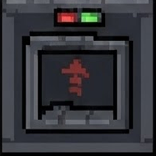
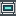
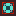

Цифра на спидометре равна внутренней скорости × 72. Перемещение — скорость × 0,5 за тик. На ровном трасса ограничена 80 на HUD; на спуске потолок — 500.
FIELD NOTES / 24 — ZITRAKSMODE
ДЕРЖИ
ДЕРЖИ
УКЛОН.
Пять мест. Три рельефа. Один аккумулятор. Лёгкий самокат проворнее на равнине — тяжёлая команда быстрее на спуске. Проверь, кто доедет до зарядной станции.
80HUD / ровно05мест в моде15Kблоков / заряд
24 / MOBILITY ZITRAKSMODE: SCOOTER ● SOURCE ATLAS
ZITRAKSMODE: SCOOTER ● SOURCE ATLAS
ZITRAKSMODE: SCOOTER ● SOURCE ATLAS20 ticks / second · 2D physics lab
W / ↑ газ · S / ↓ тормозПройди рельеф.
Нажми «Взять самокат», выбери уклон и удерживай газ или включи круиз. Меняй пассажиров на лету: массы взяты из ScooterMassHelper.java, а не придуманы для этой страницы. Это учебная 2D-модель формул мода, не игровой мир Minecraft.
● LIVE / 2D TERRAIN→ РОВНАЯ ДОРОГА
КРУТИ КОЛЁСА, НЕ МОДЕЛЬОЖИДАНИЕ ЗАПУСКА
SPEED / HUD
000км/ч
80
АККУМУЛЯТОР100%≈ 15 000 блоков осталось
ПРОЙДЕНО0 мHUD = скорость × 72
движение = скорость × 0,5 / тик
движение = скорость × 0,5 / тик
Источник: ScooterEntity.java · ScooterMassHelper.java · симуляция без коллизий/сетевой физики.
original structure / scooter_station.nbt
10 × 6 × 11 блоковНе блок. Станция.
В мире возникают целые зарядные станции: каменная площадка, кладка из андезита и туфа, железные детали, фонарь и три зарядных порта. Ниже — настоящий план слоёв NBT-шаблона из мода, не нарисованная бензоколонка. Нажми на один из портов.
OVERWORLD / STRUCTURE TEMPLATEСТАНЦИЯ №24
10 W × 11 DФАСАД / Z → · Y ↑передняя линия X=2 + опорная стенка X=5
камень бетон / железо зарядный порт пустота

ЗАРЯДНЫЙ ПОРТ / 01 ИЗ 03Точка подключения.
Три порта в структуре стоят на координатах [2,1,3], [2,1,5], [2,1,7]. Их текстуры ниже — оригинальные файлы мода.



ВНУТРИ NBT / МАТЕРИАЛЫ ПОСТРОЙКИ
32 булыжника30 полированного андезита13 блоков туфа12 блоков светло-серого бетона08 железных прутьев01 фонарь
Плюс каменные плиты, ступени, стены и таблички. Точный состав взят из шаблона структуры.ЗАРЯД / +1% В СЕКУНДУ100%
Возьми самокат в симуляторе. Для зарядки остановись.WORLDGEN / FROM SCOOTERSTATIONSPAWNER.JAVAРедкая точка
Редкая точка
на большой карте.
В обычном мире — одна станция на ячейку 768 × 768 блоков, с отклонением до 120 блоков от центра. Вокруг игрока проверяются 3 × 3 ячейки; неподходящий рельеф может помешать установке. Поворот станции случайный, карта справа — схема ячеек, не реальные координаты вашего мира.
77%без самоката15%один06%два02%три
▦ КАРТА СЕТКИ / ВЫБЕРИ ЯЧЕЙКУ
Нажми на ячейку, чтобы посмотреть пример генерации.
inside the source / engineering notes
За пределами HUD.
Масса включает самокат (1.0) и всех пассажиров. При 5 местах высота преодолеваемой ступени падает до 0,5 блока. Четыре голема могут вовсе не тронуться в крутой подъём: ускорение меньше порога 0,005 в коде мода. В браузере ступени не моделируются.
Полный заряд — 1 000 000 единиц. Расход зависит от пройденного пути, уклона и массы; порт восстанавливает 1% в секунду, если самокат стоит рядом.
advancements / connected to the main tree
Ветка достижений.
Эта ветка внизу страницы и вкладка №24 в главном древе используют один и тот же прогресс профиля. На спуске попробуй разогнаться до 100 по HUD.
0 / 3
Путь длинный.
Заряд не бесконечен.